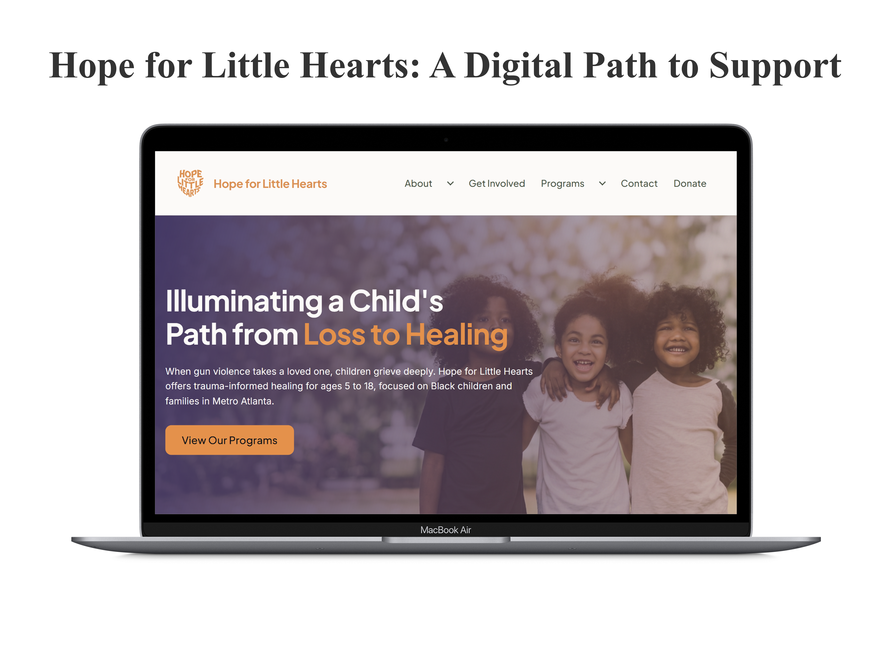
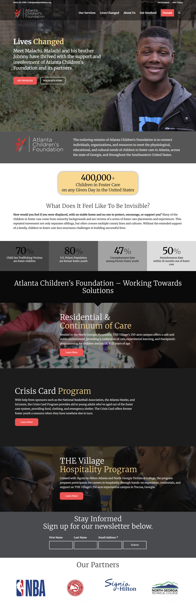
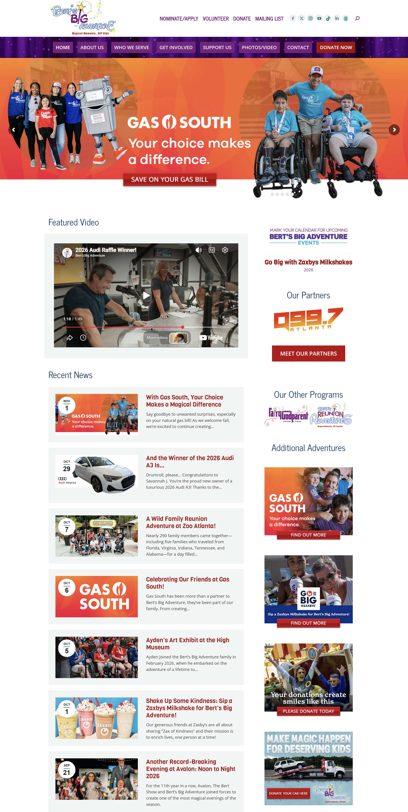
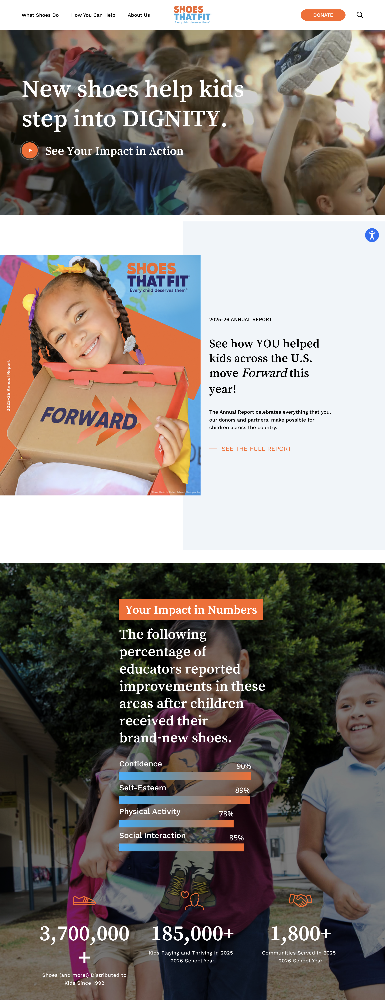
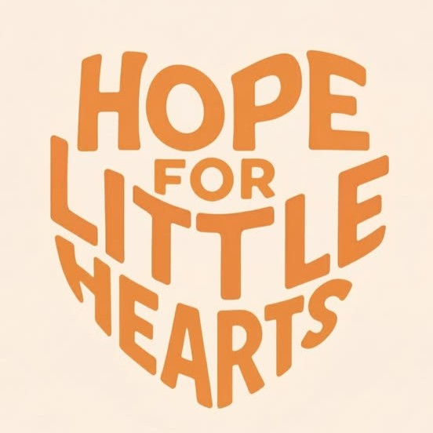
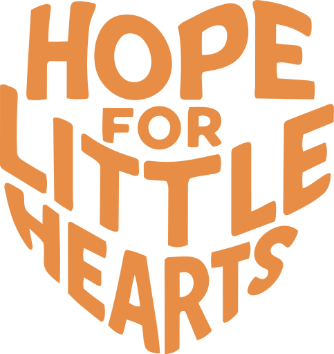
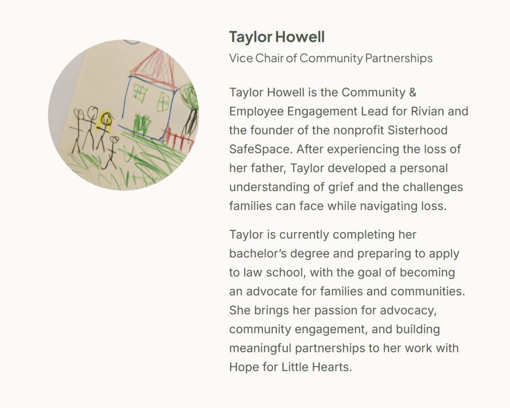
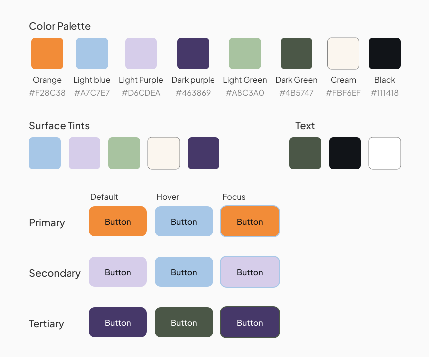
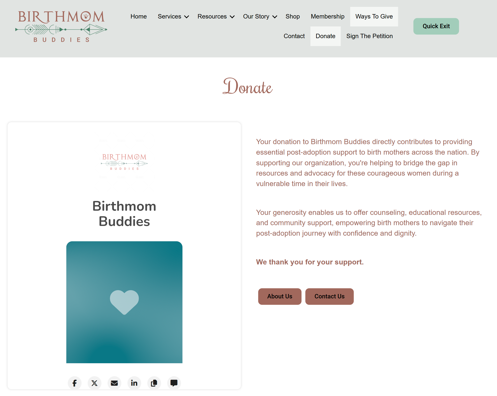

Overview
7 pages. 48 hours. 1 new nonprofit online.
Hope for Little Hearts is a new Metro Atlanta nonprofit offering trauma-informed grief support for Black children ages 5 to 18 who have lost a loved one to gun violence. The organization was just getting started, with a founder headshot, a family photo, and a logo. Our 48in48 team designed and launched a 7-page WordPress site in 48 hours. My role as UX Designer was the look and feel of the site: visual direction, color and button system, layout, and accessibility.
The Problem
A brand-new organization needed to earn the trust of grieving caregivers before it had a finished program, a track record, or much content. Its flagship program, the Little Hearts Healing Pathway, was still being developed with social workers, so the website had to build trust and collect interest without overpromising.
The Solution
A warm, inviting site where orange is the color of action and purple and green carry the atmosphere. Each key page opens with a clear statement of the mission. The Programs page works as an interest list, and children’s drawings fill the team page where headshots weren’t available.
Role
UX/UI Designer
Team Members
1 Project Manager, 1 Developer
Links
Tools
Beaver Builder, Illustrator, Slack
Research
Client Meeting: Aligning on Day-One Success
I met with Courtney, the founder, to understand the site's purpose, not just how it should look. Two questions shaped the build:
- What would make this website a success a few months from now?
- What’s the one action you want a first-time visitor to take?
Her answer was clear: families enrolling in the pilot program. Donations weren’t the organization's priority yet, so I treated them as a secondary action. I also learned that orange was chosen because it is the official color of Gun Violence Awareness Month.
Design Decisions: Prioritizing Enrollment
The hero button says “View Our Programs,” the interest form is the only form on the site, and the donate button is visible but never competes with the pilot call to action.
- The Programs page and its interest form became the site’s primary conversion goal.
- Donate stayed visible in the menu and footer, but the homepage’s main call to action points to programs.
- The given color palette was pastel, and didn’t give text enough contrast. Orange stayed because the founder wanted it central to the brand.
Competitive Analysis: Benchmarking Mature Nonprofits for a Day-One Brand
The client provided 3 websites that she liked, so I treated them as conversation starters. She liked Atlanta Children's Foundation the most, mainly for its clean look with a dark palette and one focus per section. While she liked the family-centered optimism of Bert’s Big Adventure, the site felt too cluttered. All three sites also lead with proof, such as stats, partner logos, or trust badges. A brand-new organization has none of that yet, so I focused on building credibility through the team page instead.
| Criteria | Atlanta Children's Foundation | Bert's Big Adventure | Shoes That Fit |
|---|---|---|---|
| Homepage | Named person in the hero, one clear mission statement | Rotating carousel promoting corporate sponsors | Video hero with an emotional headline |
| Credibility | Stat counters, partner logos | Sponsor and partner banners | Stat counters, trust badges |
| Who We Serve Page | Named individuals with portraits and life story details | Answers “Do we qualify?” with an eligibility list | Statement of need, backed by testimonials and impact numbers |
| Story to Action | Story leads into five ways to help, one button each | Compelling story but sidebar is cluttered with 8 promotional banners | Story leads into a repeated “Give Now” banner |
| Design Takeaway | Story-first hero with plenty of whitespace | One primary action per section | Alive hero with an emotional tagline |

Clean, story-first hero

Sponsor-centered homepage

Emotional headline
Design
Visual Direction
First, I vectorized the logo in Illustrator for the header and favicon. Stacked lettering is hard to read on smaller screens, so I paired it with live text in the header. I also made a white version for the purple footer.


With no brand guidelines, I drew inspiration from the organization's Instagram. Pastel chalk illustrations of rainbows and bumble bees created a hopeful, family-centered tone. I carried this identity into the site with an expanded color palette and children’s drawings. The nonprofit had team bios ready, but no photos. Instead of using generic placeholders until they were ready, I used children’s artwork in the Teams page.

Team page: children’s drawings as a designed empty state
Design System
I paired Plus Jakarta Sans for headings with Inter for body text. Jakarta’s rounded letterforms bring a little playfulness, which echoes the hand-drawn chalk style from Instagram. Inter is legible at body sizes, which matters for caregivers who may be older or reading on a phone. Both are sans-serifs, so the pairing is cohesive.

Final Website
With limited photography and an in-development pilot program, every page was structured to answer caregiver questions clearly, build trust, and guide families toward a low-friction interest form.
Homepage: mission-first layout with pilot program CTA

Donate page: clear value proposition with a single, direct call to action
Lessons Learned
Outcomes Over Outputs
The hackathon sharpened a core product habit: UX isn't shipping a wishlist, it's aligning what is possible today with the outcome that matters most. Hope for Little Hearts' goal was clear: enroll families in the pilot program. The founder's initial wishlist, from animated stat counters to video headers, was modeled on mature nonprofits with years of media and data behind them. My job was to guide her toward what was feasible in 48 hours, not build everything she asked for. I asked what real success would look like after launch, then used the answer to filter every decision around enrollment.